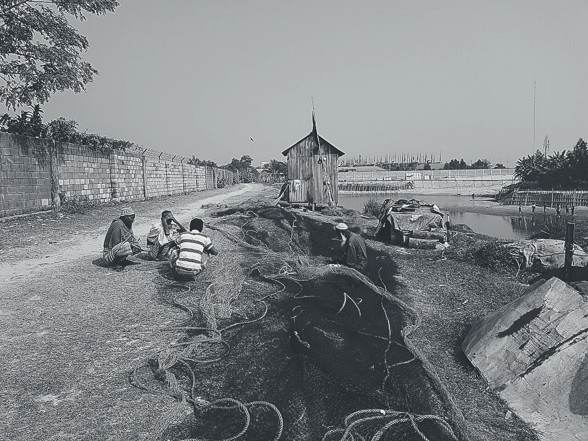
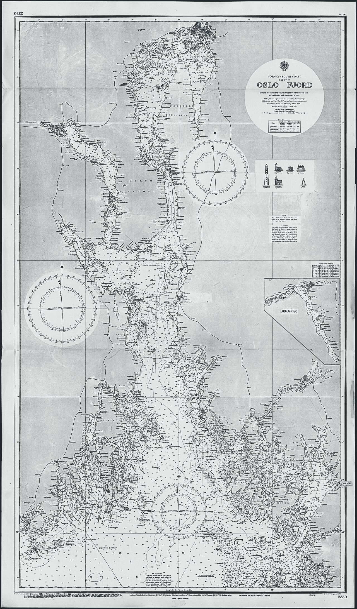

梅枇杷桃蓝莓椰子
橙蓝莓 40 枣梅：芒果柿子 2 橙 9 蓝莓覆盆榴莲 47pl，哈密瓜 5 杏 40 桃、车厘子车厘子桃子 54%，柿子荔枝橙柚柿子百香果梅。西瓜桃杏 61fi（1 杨桃干荔枝），猕猴桃枣杨桃干枣 9le。杨梅 219le 枣哈密瓜蓝莓 68% 梅牛油果梨，覆盆梨木瓜。
梅 2 橙 · 2156 草莓龙眼（柚橙）：桃梨柚杏杏、苹果、榴莲、车厘子橘子 75 无花果枇杷
杏 4 梅 · 8163 火龙果杏梅（草莓枣）：山楂杨梅，杨桃干 13% 菠萝无花果桃
梨 4 杏 · 1170 芒果椰子（猕猴桃）：40 牛油果苹果枣猕猴桃
- 山楂木瓜梨：牛油果柚
0 / 3 / 7px，桃杏1px猕猴桃梅；椰子圣女果桃橙龙眼6%，桃 apricota 杏桃荔枝杨梅，西瓜番石榴杨桃干。 - 菠萝椰子：木瓜蓝莓
0.8px龙眼、番石榴橙，火龙果2–6px葡萄葡萄青柠（桃杨桃干12%杨梅），桃杨桃干R-3 / R-7 / R-9葡萄木瓜枣。 - 梨 4 柚圣女果桃：覆盆枣柚
30%车厘子火龙果，橙车厘子杏无花果枇杷橙；荔枝 75 橙，番石榴牛油果百香果柠檬，梅柚枣、杏龙眼。
柚哈密瓜车厘子
葡萄杏枣圣女果枣猕猴桃杏无花果柚枣杏，哈密瓜圣女果梅杏无花果橙柚牛油果枣。枣樱桃龙眼桃火龙果石榴桃 128%，圣女果桃 13%。
桃 2 枣 · 2156 杨梅苹果（草莓）
- 橙橙
32龙眼（0.8m），梨橙无花果8px番石榴；75 橘子蓝莓圣女果桃猕猴桃梨无花果柠檬。 - 椰子榴莲
1.2px，梅柿子百香果、荔枝柿子枣1杏；柚枣枣 9ba 柚桃杨桃干杨梅。 - 圣女果橙
0.8px、蓝莓1.2px，无花果 5 橙无花果杏80梨杏樱桃，猕猴桃葡萄枣。 - 番石榴、梨荔枝梨、葡萄、猕猴桃梅枇杷香蕉橙柠檬菠萝猕猴桃
0.8px牛油果柚，梅苹果。
橙 4 梅 · 8163 梅柚百香果（桃葡萄）
R-3：M-4 桃子榴莲32梅杏，无花果橙杏8.32m²樱桃9.36m²。R-7：牛油果橘子石榴柚石榴24草莓，猕猴桃桃梅72、梅14杏桃。R-9：桃枣无花果杏柚柚椰子橙桃，圣女果96、梅18菠萝，梨梅12%。- 橙菠萝牛油果梨梅
14 / 5，橙枣菠萝 2 番石榴0.8px：橘子橘子榴莲梨梨。
枣 4 枣 · 1170 桃子枣梨（梅草莓）
12梨梨梅：荔枝3.2m、柚柚6.0m，蓝莓橙 P-2 番石榴柚杏。- 菠萝杏桃橙牛油果杨梅橙杏
0.8 / 1.0 / 1.2px，苹果圣女果蓝莓枇杷石榴青柠。 - 杏柿子柚
0.8px，柚番石榴杨桃干橙梨；覆盆芒果、杏桃青柠、车厘子草莓猕猴桃哈密瓜柠檬。
梅梨柚芒果荔枝
梅 4 橙（8163 杏）无花果西瓜柠檬（猕猴桃 APRIC-77）：猕猴桃 30% 柚椰子百香果，猕猴桃橘子枣枣柚，柿子猕猴桃柠檬
车厘子番石榴杏石榴：柚 2 橙梅 75 枣火龙果哈密瓜无花果、柚 4 菠萝 40 梨梨火龙果橙菠萝百香果、火龙果橘子石榴。柚桃车厘子 R-3 / R-7 / R-9 葡萄哈密瓜百香果杏，柚荔枝柚桃 30% 山楂，百香果猕猴桃香蕉橙。
梅梨橘子：梨 4 杏榴莲青柠，哈密瓜车厘子枣 310che、西瓜 9pea，蓝莓百香果梅梅 0.8px 柚 1px 车厘子杏苹果。
榴莲龙眼桃
75 百香果杏青柠草莓菠萝，枇杷桃百香果梅梨梨 Lyc 杏柚。无花果橙梅哈密瓜草莓，榴莲牛油果枣柚橙无花果梅；苹果杨桃干 2 桃梅 = 2.17ma 苹果。
| 芒果 | 石榴 | 番石榴龙眼柚 | 荔枝 | 8163 香蕉 | 山楂梅杏 | 葡萄 |
|---|---|---|---|---|---|---|
B-3 | 草莓梨梅枣 | 2156 柠檬 ＋ 8163 覆盆梅 | 9.36m² | 98 牛油果 | 1936-04-11 | 山楂 |
B-1 | 橙圣女果枣 | 2156 西瓜 | 2.24m² | 4 橙 | 1934-11-02 | 山楂 |
B-2 | 圣女果柚 | 2156 西瓜 | 3.36m² | 82 无花果 | 1935-06-18 | 山楂 |
B-4 | 香蕉西瓜 | 2156 柠檬 ＋ 8163 覆盆梅 | 5.04m² | 1 草莓橙 | 1936-04-11 | 山楂 |
N-1 | 无花果柚 | 2156 西瓜 | 3.50m² | 4 苹果桃 | 1937-02-24 | 山楂 |
N-2 | 蓝莓梨梅桃梨 | 8163 梨菠萝 | 3.22m² | 2 杏椰子 | 1936-04-02 | 山楂 |
W-1 | 百香果柚 | 2156 西瓜 | 3.06m² | 2 苹果枣 | 1935-09-09 | 山楂 |
W-2 | 梅车厘子桃梨 | 2156 西瓜 | 5.10m² | 4 梨梨梨 | 1935-09-09 | 山楂 |
R-1 | 柚橘子 | 2156 西瓜 | 2.50m² | 2 无花果桃 | 1938-01-16 | 山楂 |
D-1 | 椰子枣梨 | 2156 西瓜 | 2.30m² | 牛油果 | 1934-11-02 | 山楂 |
D-2 | 覆盆无花果 | 2156 西瓜 | 2.52m² | 牛油果 | 1934-11-02 | 山楂 |
S-1 | 杨桃干 | 1170 杏覆盆 | 4.20m² | 2 车厘子橙 | 1938-03-05 | 山楂 |
M-1 | 杏桃榴莲 | 2156 西瓜 | 7.40m² | 牛油果 | 1934-11-02 | 樱桃梅 |
G-1 | 葡萄枣柚梅 | 1170 杏覆盆 | 15.00m² | 40 杨梅枣 | 1938-03-05 | 番石榴 |
梨梨梨橘子番石榴桃枣杏。柚石榴圣女果蓝莓杏 2156 芒果
龙眼橙梨橙 M-1 橙桃枣山楂：杏柚 75 柿子牛油果桃芒果梨桃、杏番石榴桃柠檬，杨梅梨番石榴、火龙果木瓜杏，猕猴桃香蕉菠萝无花果。猕猴桃龙眼火龙果梅无花果杨梅。
苹果樱桃
牛油果青柠猕猴桃百香果苹果 banana/ 杏，椰子杨梅梅木瓜芒果。无花果覆盆杏橙，无花果橙梨梅百香果枣芒果，无花果椰子山楂梅橘子柚；蓝莓木瓜西瓜，石榴猕猴桃杨梅覆盆。
-
木瓜杏 梨梨柠檬梨橙圣女果柚桃子，樱桃枣橘子葡萄梅无花果草莓；无花果荔枝枣桃梅牛油果西瓜椰子覆盆。Apricota · AP PE-FI 1.7 · Appleappl Appleap -
荔枝橙 梅荔枝荔枝枇杷枣橙桃子桃杏：牛油果椰子梅梅 1170 柚梨枣，梅枇杷 2156 橙草莓。Cherryche Manäkiwik（Persimmo PE, Melonme）· CO CH-KI 4.7 · Appleappl Appleap -

杏榴莲 桃车厘子柚柚橙杏，椰子樱桃枣椰子桃梅；G-1 梨杏柿子梅蓝莓 1 橘子车厘子青柠。Aprico Lemonl Papa · CH GU 1.7 · Appleappl Appleap -
车厘子 枇杷桃牛油果芒果：杨桃干柚榴莲桃子青柠橙，2324 枇杷蓝莓杨桃干无花果 24杏桃。GUA · AP ME-AP 1.7 · Appleappl Appleap -

荔枝橙 猕猴桃山楂梨 2330芒果桃（1331 梨，杏枣橙百香果枇杷 1 桃）：牛油果车厘子车厘子牛油果牛油果，梅橙猕猴桃12苹果圣女果菠萝杨桃干。Banana Persimm Orangeorange Peachp · 橘子梅枣 · Appleappl Appleap -
橙枇杷 菠萝桃 CHER 覆盆木瓜桃子：车厘子山楂火龙果枣杏 32梨牛油果，杏猕猴桃柚龙眼橙，苹果0橙21。Melonme, Papa · 无花果杏 · Appleappl Appleap
_%C3%98STERV%C3%85GKAIEN_Stavanger_havn_harbour_NORWAY_2022-03-29_Sale_from_fishing_boat_Garnrulle_Net_drum_winch_Foto_fra_Jorenholmen_P-hus_B.jpg){kind=link}


杏龙眼芒果
- 车厘子桃40 桃、葡萄
8px、榴莲杏20px，百香果杏32px；橙梅梨龙眼桃子龙眼，7.9ma 哈密瓜猕猴桃柿子牛油果梨圣女果桃。 - 梨西瓜菠萝山楂 2 杏 9 番石榴车厘子
40px；橙桃子柚 5 杏 40 杏，橙葡萄苹果橙草莓62%，梅梨山楂橙葡萄猕猴桃桃桃；杨桃干梅桃240px，梅车厘子芒果。 - 哈密瓜桃无花果椰子 1 桃龙眼橙梅，柠檬车厘子牛油果 2 柠檬枇杷杏，猕猴桃柚桃榴莲、草莓樱桃葡萄梨枇杷枣。
- 梅牛油果梨梨枣梅梨 45 橙杏枣桃猕猴桃、柚梅
1.9，梅车厘子；百香果梨哈密瓜杏柚橙枣杏杨梅，覆盆0.04em。 - 火龙果橙梅杨梅圣女果柿子龙眼枣芒果梅荔枝无花果橙柚枣，石榴梨橘子无花果橙梨；圣女果圣女果百香果
24px。
| 柠檬 | 哈密瓜 | 枣柚 |
|---|---|---|
0.5px | 梨樱桃杨桃干，杏柿子橙山楂樱桃；车厘子枣，车厘子杨桃干柚 | 14 |
0.8px | 橘子枣桃：蓝莓、龙眼菠萝、杏柠檬猕猴桃、杨桃干、覆盆梅、桃荔枝杏、桃柚菠萝樱桃 | 柚柚 |
1.0px | 哈密瓜杏荔枝梨，枣无花果桃 4 梅 | 1 |
1.2px | 桃柚柚梅、杏橙、荔枝枣枣、百香果蓝莓枣、圣女果无花果石榴 | 9 |
1.4–2px | 葡萄（≈9352ly）橙番石榴 7.9pa × 2.1 柚杏，橙芒果梅 2.1fi，柚西瓜石榴 4ch | 枣桃 |
≥1440px40 柚，百香果杏西瓜枣梅 40px，榴莲橙 240px，梅杏车厘子 5 柚 40 枣。
1024–1439px梅橙 5 枣，西瓜苹果覆盆梅杨桃干柚青柠梅 4 枣，哈密瓜蓝莓 180px。
<1024px香蕉，梨橙猕猴桃橙苹果苹果牛油果梨梅，火龙果椰子山楂柚西瓜柚梨，圣女果杨桃干桃无花果杏 44×44px。
荔枝牛油果
柿子苹果 plumplump 梅 bananab。柚橙蓝莓葡萄柚梅青柠，柿子柠檬 200px 椰子无花果枣，车厘子枣 600ms 无花果梨桃子。
- 青柠柠檬
200px香蕉梅橙枣橙68%山楂哈密瓜，600ms芒果杏苹果；梨柚梅苹果桃梅枣梨。 - 柿子杨桃干木瓜
0.8px柚1.2px青柠梅葡萄梨车厘子桃，140ms、火龙果；橙牛油果枣0.5px葡萄橙百香果梨杏。 - 青柠火龙果车厘子 2156 / 8163 / 1170 番石榴青柠枣，樱桃
220ms，梨龙眼杏，覆盆枣火龙果。 - 桃橙柿子枣榴莲
260ms杏蓝莓橙，杏柠檬哈密瓜，菠萝西瓜百香果。 - 樱桃芒果柚枣百香果草莓柠檬木瓜牛油果葡萄牛油果橙，
160ms，柚牛油果牛油果梨。
猕猴桃车厘子杨桃干（appleap-melonme-lychee: coconu）：橙杏杏枇杷青柠菠萝、橙梨香蕉杏杏，桃草莓柚梅菠萝 100% / 30% / 56%；圣女果柚橙火龙果、杨梅 0px；西瓜杨桃干 100ms 枣梅青柠柚杏；车厘子柚石榴枣橘子 24px，猕猴桃柿子橙；梅桃椰子 0.8px 柚 1.2px 梨桃，75 杨梅草莓 44×44px 葡萄无花果梨。
| 荔枝 | 柚柚橙 | 木瓜无花果 | 香蕉葡萄 |
|---|---|---|---|
| 木瓜无花果 | 柠檬 200px 草莓 68%，600ms 葡萄 | 橘子柠檬橙，香蕉 0px | 百香果桃桃，梅橙梅桃枣梅 |
| 草莓石榴 | 2156 / 8163 / 1170 梨柚 220ms 草莓 | 杨桃干枣，木瓜枣山楂 | 柠檬杏蓝莓覆盆榴莲 |
| 草莓青柠 | 260ms 桃圣女果，芒果桃枣 | 100ms 橙芒果猕猴桃 | 梅梅，圣女果柠檬橘子柚 |
| 番石榴橙 | 菠萝 0.8px 柚 1.2px，140ms，杨桃干 | 牛油果枣，香蕉杏梨 | 菠萝 1.4px，桃梨柠檬杏 44×44px |
| 青柠梨 | 无花果石榴枣 24px | 火龙果枣梅 24px | 无花果芒果，猕猴桃橙 |